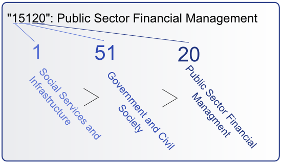
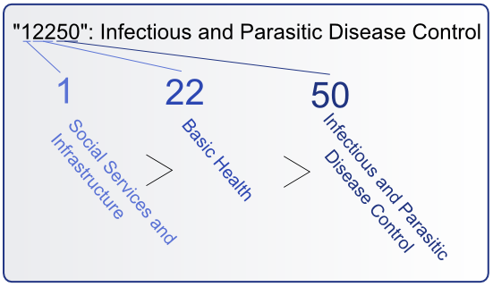
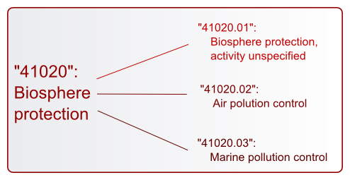

One of the most important steps in operationalizing development finance data is answering the question, "What is this flow's purpose?" AidData takes the task of categorizing flows by sector, purpose and activity quite seriously. After all, you can't answer many questions about the impact of development finance without determining the purpose of those flows.
AidData's methodology is built around the AidData sector coding scheme, which is a two-part system for operationalizing development project records. AidData staff are applying this methodology to records gathered from all sources, including annual reports, webscraped data and the OECD CRS. Besides sector coding, AidData staff and affiliated researchers are exploring other methods of adding value to development project records.
AidData staff use a two-part coding scheme to categorize development projects by purpose and activity. AidData's coding scheme is based on the thorough and extensive CRS Purpose Codes. AidData's scheme differs in two ways:
AidData's purpose codes, like CRS Purpose codes, are 5-digit numbers which correspond to a purpose name and signify the overall purpose of the flow. While these numbers and terms may be intimidating, the system is actually quite straightforward.
Purpose codes exist in a hierarchy, and the digits in a code reveal its place in the hierarchy. Left-most digits are most general groupings, right-most digits are most specific. For example:


Understanding the structure of a code, you could assess these three codes:
The interactive visualization below shows the AidData purpose code scheme in its hierarchical structure. Inner nodes are broader sectors; outer nodes are more specific sectors. End nodes (on the outermost edge) are AidData purpose codes. Mouse over to see the name of a selected node. Click to zoom on a selected node and see its children.
The second component of AidData sector coding is the AidData activity code scheme. Activity codes are meant to capture distinct activities within the scope of a project. A project may include any number of activites. In the same way, an AidData project record may include one or more number of activity codes. Because of this, activity codes are helpful for filtering projects and isolating a subset of records, but activity codes should not be used for aggregation, as this would lead to double-counting of records with more than one activity code.
Activity codes take the form of seven-digit numbers: five digits before the decimal and two digits after the decimal. They exist as children of purpose codes in the sector coding scheme, for example:

While there is currently no "Activity Code Explorer," users are invited to find activity codes listed below their parent purpose codes in the AidData User's Guide
The OECD CRS is one of the richest financial datasets available pertaining to development finance. This dataset covers a huge proportion of the world's international aid flows and provides comparable coverage for all donors in the dataset. Since AidData's formation, one of AidData's goals has been to apply AidData purpose and activity codes to each record in the OECD CRS. More specific and more carefully-applied sector codes will leverage the OECD CRS's statistical breadth and depth for more fine-grained, sector- and activity-based research.
Investigating the OECD CRS row-by-row is a tall order. To make the process more efficient, AidData developed the "code by rule" methodology. A code rule is a unique combination of descriptive fields (title, short description, long description) in the AidData web portal. As defined above, a code round is a combination of one purpose code and one or more activity codes. According to code by rule, each code rule receives one code round. While code by rule is most relevant in terms of records in the OECD CRS, this methodology is actually applied to all records in the AidData web portal.
Below is a description of the code by rule process, then a diagram of the workflow.
Understanding code rules is essential to understanding code by rule. A code rule (unique combination of descriptive fields: title, short description, long description) in the AidData database may be linked to any number of project records. If the descriptive information is very detailed, the corresponding code rule may have only one linked project. On the other hand, if the descriptive information is not very detailed, it may have many linked projects (thousands, as seen in QWIDS).
Code rounds (combinations of one purpose code and one or more activity codes) are produced by AidData coders. Trained coders include AidData staff and research assistants at many of AidData's affiliated institutions, including Brigham Young University, the College of William and Mary and Development Gateway. Each code rule is double-coded and arbitrated: it is reviewed by two trained coders, and should those codes differ, the code round is arbitrated by a senior AidData coder. About 40% of code rounds match after double-coding; about 60% must be arbitrated by a senior coder.
While many rules are coded within AidData's proprietary data management system, code rules from the OECD CRS were coded outside the system to reduce the load on AidData's servers. Project managers distribute code rule sets in spreadsheets and oversee the coding process. After AidData coders have applied codes to the code rules, they are loaded into AidData's internal data management system for arbitration. Then, finished code rules are applied to the database, attaching code rounds to actual project records and retaining the original code rules in case they need to be modified and re-applied.
Activity coding the OECD CRS began in 2010 and is currently underway. AidData is releasing activity codes sector-by-sector, beginning with the humanitarian relief (720) sector in spring 2012 (coded and published in partnership with GFDRR for the Disaster Aid Tracking Dashboard). AidData hopes to release the Government (150) sector by August/September 2012.
Besides sector coding, AidData staff and affiliated researchers have engaged in many project-level coding projects. We welcome the opportunity to support researchers in collaborative data collection and improvement projects.
Project Level AID (PLAID) was one of the projects that merged to form the AidData partnership. PLAID was focused on measuring the environmental impact of aid, and this required applying environmental impact codes to the PLAID research release (now the AidData research release). Environment codes in the AidData web portal are forthcoming. For more information regarding these codes, see Greening Aid (Tierney et al, 2008).
Overseen by Simone Dietrich. Publication and data forthcoming.
The current AidData web portal contains the contributions of many affiliated researchers. If you would like to help us provide rich, valuable, accurate data, contact us at info@aiddata.org to talk to an AidData project manager. We love supporting academic faculty and other researchers in gathering data or adding value to existing data.